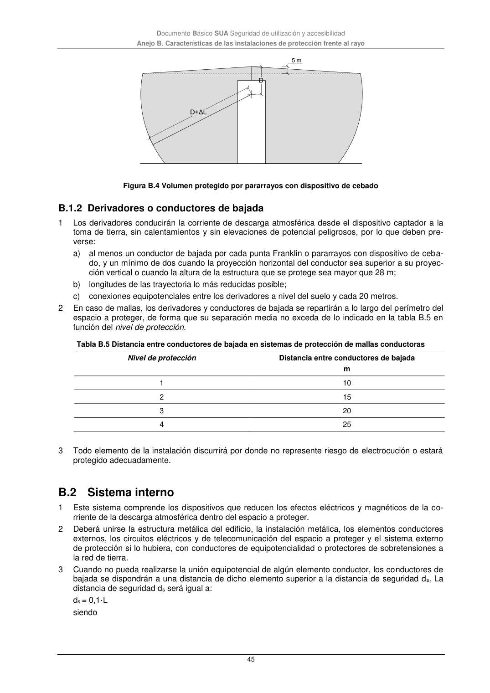

DB-SUA · B.1.2 Derivadores o conductores de bajada · versión 2022-06-14 · capa oficial
Formatos: JSON compacto · Markdown · PDF fuente
Ámbito del documento · texto del ámbito · documento y tablas
ID técnico a0161 · PDF pág. 45 · jerarquía no validada por persona · contrastado con el literal de la página 45 (marcador PDF); no validado por persona · padre: a0160
B.1.2 Derivadores o conductores de bajada 1 Los derivadores conducirán la corriente de descarga atmosférica desde el dispositivo captador a la toma de tierra, sin calentamientos y sin elevaciones de potencial peligrosos, por lo que deben pre- verse: a) al menos un conductor de bajada por cada punta Franklin o pararrayos con dispositivo de ceba- do, y un mínimo de dos cuando la proyección horizontal del conductor sea superior a su proyec- ción vertical o cuando la altura de la estructura que se protege sea mayor que 28 m; b) longitudes de las trayectoria lo más reducidas posible; c) conexiones equipotenciales entre los derivadores a nivel del suelo y cada 20 metros. 2 En caso de mallas, los derivadores y conductores de bajada se repartirán a lo largo del perímetro del espacio a proteger, de forma que su separación media no exceda de lo indicado en la tabla B.5 en función del nivel de protección. Tabla B.5 Distancia entre conductores de bajada en sistemas de protección de mallas conductoras Nivel de protección Distancia entre conductores de bajada m 1 10 2 15 3 20 4 25 3 Todo elemento de la instalación discurrirá por donde no represente riesgo de electrocución o estará protegido adecuadamente.

PDF fuente redistribuible: copia fiel enlazada en esta página (SHA256 verificado).